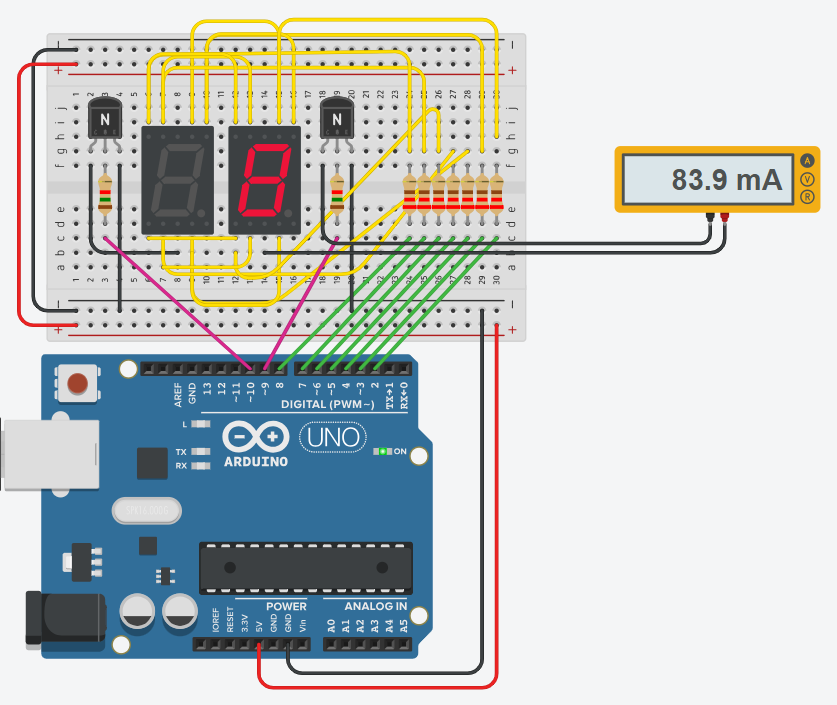

Teller op een dubbel 7-segment display
Je maakt een teller van 00 tot 99 op twee 7-segment displays. Onderweg los je twee problemen op: je hebt te weinig pinnen voor veertien segmenten, en de gemeenschappelijke pin van een display moet meer stroom afvoeren dan een uitgangspin aankan. Voor dat tweede probleem reken je zelf een basisweerstand uit.
Je hebt de meeste code al min of meer gemaakt: de cijferpatronen en toonCijfer() komen uit de teller op één display, en waarom een uitgangspin een grote stroom niet aankan staat op Vermogen schakelen.
Als je de oefening uitwerkt in TinkerCAD kan je vertrekken van dit sjabloon:
sjabloon dubbel 7-segmentdisplay met NPN (tinkercad.com) (klik op copy and tinker)
Twee cijfers met zeven pinnen
Eén 7-segment display kost je zeven pinnen. Twee displays aansluiten zou er veertien vragen, en zoveel vrije pinnen houd je op een Arduino Uno of Leonardo niet over.
Een dubbel 7-segment display lost dat half op in de hardware. Het is één onderdeel met twee 7-segment displays erin, het linkse en het rechtse, en de zeven segmentaansluitingen van allebei hangen aan dezelfde Arduino-pinnen. Alleen de gemeenschappelijke pin van elk display is apart uitgebracht: die twee gaan niet vast naar de massa, maar worden elk door een eigen Arduino-pin gestuurd, in het sjabloon pin 9 en pin 10.

Dat scheelt zeven pinnen, maar het patroon dat je op de segmentpinnen zet, geldt daarmee voor allebei de displays tegelijk. Op het schema hierboven staat daarom twee keer dezelfde 8. Een 4 links en een 2 rechts krijg je er zo niet op. Wat je wel apart kiest, is welk display op dat moment stroom krijgt, en daar dienen pin 9 en pin 10 voor.
De displays in deze oefening zijn common cathode: een segment brandt als zijn segmentpin hoog staat en de gemeenschappelijke pin van dat display laag. Ligt die gemeenschappelijke pin niet aan de massa, dan staat er over de segmenten van dat display geen spanningsverschil, loopt er geen stroom en blijft het donker. Zo kies je welk van de twee je op dat moment ziet.
Je toont de twee cijfers dus om de beurt, en je wisselt snel genoeg om het verschil niet te zien. Dat heet multiplexing. Hoe je dat aanpakt en hoe snel het moet, staat op Multiplexing. Lees die pagina eerst, want de rest van deze oefening bouwt erop verder.
Laat je beide displays samen een 8 tonen, dan voedt elke segmentpin twee segmenten: 2 × 14,5 mA = 29 mA, terwijl een uitgangspin voor 20 mA bedoeld is. De veertien segmenten samen vragen 14 × 14,5 mA = 203 mA, net boven de 200 mA die de chip in totaal mag leveren. Daarom staat er op de Arduino in het schema hierboven een uitroepteken: TinkerCAD rekent tijdens het simuleren mee en meldt het zodra een pin of de chip boven zijn grens gaat. Met multiplexing brandt er altijd maar één display, dus die twee grenzen haal je nooit. Waar die 14,5 mA per segment vandaan komt, staat op de wet van Ohm.
Te veel stroom voor één pin
Multiplexing betekent dat er op elk moment precies één display aanstaat, en dat regel je met de twee gemeenschappelijke pinnen. Die van het display dat aan de beurt is zet je laag, die van het andere hoog. In het schema hieronder staat pin 10 laag en pin 9 hoog, dus brandt alleen het display dat aan pin 10 hangt.
Al de stroom van dat ene display loopt daardoor door die ene lage pin. Staat er een 8 op, dan branden er zeven segmenten van 14,5 mA en komt er 7 × 14,5 mA = 101,5 mA samen. Een uitgangspin mag er absoluut maximaal 40 afvoeren.
Daarom staat er in het schema een ampèremeter in de tak van die gemeenschappelijke pin: die laat zien hoeveel stroom de pin in werkelijkheid te verwerken krijgt. TinkerCAD meldt de overschrijding zelf ook.

Hoeveel stroom een pin mag leveren en afvoeren, staat op Vermogen schakelen.
Een transistor per display
In het sjabloon staat daarom onder elk display een transistor: de 2N2222, een NPN. De gemeenschappelijke pin van het display gaat naar de collector, de emitter gaat naar massa, en de basis hangt via een basisweerstand aan een Arduino-pin. Zet je die pin hoog, dan geleidt de transistor, wordt de gemeenschappelijke pin naar de massa getrokken en is dat display actief. De Arduino-pin levert dan alleen nog de kleine basisstroom. Merk op dat het niveau daarmee omkeert: de Arduino-pin stuurt nu de basis in plaats van de gemeenschappelijke pin, dus hoog zet het display aan.
Een relais zou hier ook kunnen, maar een transistor is goedkoper, schakelt in microseconden in plaats van in milliseconden, en heeft geen contacten die slijten. Bij multiplexing schakel je honderd keer per seconde, en dat houdt geen enkel relais vol. De volledige vergelijking staat op Vermogen schakelen.

Bij de twee basisweerstanden staat geen waarde, want die reken je zelf uit.
De emitters van de twee transistoren gaan naar de GND van de Arduino. Werk je met een aparte voeding voor het display, dan verbind je de min van die voeding met diezelfde GND. Zonder gemeenschappelijke massa heeft de spanning op de basis geen referentie en schakelt er niets.
-
Reken uit hoeveel stroom één display trekt. Bereken met de wet van Ohm de stroom door één segment, en kijk hoeveel segmenten er in het slechtste geval samen branden. Dat is je Ic, de collectorstroom die de transistor moet doorlaten.
-
Zoek Vbe en hFE op in de datasheet. Beide staan in de datasheet van de transistor. Vbe is de spanning over de basis-emitterjunctie, hFE de stroomversterkingsfactor.
-
Neem marge op de hFE. Reken niet met de waarde uit de datasheet zelf. Deel ze ruim door, zodat de transistor zeker voluit schakelt. Op Vermogen schakelen staat waarom, en met welke factor.
-
Bereken Rb. Eerst
Ib = Ic / hFE, danRb = (Vcc - Vbe) / Ib. Rond af naar een weerstand die echt bestaat, en noteer je berekening. Beide displays krijgen dezelfde waarde, want ze trekken evenveel. -
Vul de basisweerstanden in. Zet je berekende waarde in beide basissen van het sjabloon, en controleer of je met een hoge pin het bijhorende display aan krijgt.
-
Meet na. Zet een ampèremeter in de gemeenschappelijke tak van één display, laat er een 8 op staan, en vergelijk de meting met je berekening. Meet daarna met een voltmeter ook de spanning over één segment, over zijn voorschakelweerstand, en op de Arduino-pin die dat segment voedt.

Dat verschil kan je tot op de honderdste narekenen. Hang een voltmeter over elk onderdeel van de kring van één segment en vergelijk met wat je berekening aannam:
| Spanning | Gemeten | Aangenomen |
|---|---|---|
| op de pin die het segment voedt | 4,40 V voltmeter tussen pin 2 en GND. De pin zakt in omdat je hem belast: er loopt 12 mA uit |
5 V de berekening gaat uit van de volle voedingsspanning |
| over het segment | 1,72 V voltmeter tussen de segmentaansluiting en de gemeenschappelijke pin van het display |
1,8 V de Vforward van een rode led, zoals je ze bij de wet van Ohm invulde |
| over de transistor, VCE(sat) | 0,045 V voltmeter tussen de collector en GND |
0 V de transistor kwam in de berekening niet voor |
| over de voorschakelweerstand | 2,64 V voltmeter over de weerstand, en 4,40 − 1,72 − 0,045 geeft hetzelfde |
3,2 V wat er na het segment en de transistor van de 5 V overblijft |
| de onderste drie samen | 4,405 V 1,72 + 0,045 + 2,64, dus de spanning op de pin |
5 V 1,8 + 0 + 3,2, dus de volle voedingsspanning |
In beide kolommen tellen de drie spanningsvallen op tot wat de pin levert. Alleen levert die pin geen 5 V maar 4,40 V, en dat gaat af van wat de weerstand overhoudt: 2,64 V in plaats van 3,2 V. Daarmee loopt er 2,64 / 220 = 12,0 mA per segment in plaats van 14,5 mA, en zeven segmenten samen geven de 84 mA die de ampèremeter aanwijst.
De pin is dus de oorzaak, en de andere twee rijen zijn bijzaak. Een uitgangspin is geen voeding: hij gedraagt zich als een bron van 5 V met ongeveer 50 Ω in serie, en zakt bij 12 mA dus naar 4,4 V, goed voor 0,60 V van het verschil. Het segment geeft daar 0,08 V van terug omdat het net iets minder neemt dan de 1,8 V waarmee je rekende, en de transistor pikt er 0,045 V af. Voor het dimensioneren verandert er niets: je rekende op het slechtste geval en meet minder, en dat is de veilige kant.
Merk op waar die 84 mA loopt: van de segmenten door de collector en de emitter naar de GND van de Arduino. Door de Arduino-pin gaat alleen nog de basisstroom. Ook pin 9 zakt daarbij een beetje in, tot 4,86 V, dus over Rb staat 4,86 − 0,75 = 4,11 V en loopt er 4,11 / 1500 = 2,74 mA. Dat is iets meer dan de 2,54 mA die je nodig had, want je rondde Rb naar beneden af en een kleinere weerstand laat meer basisstroom door. Die extra stroom is de marge die de transistor zeker in verzadiging houdt, en de pin blijft er ruim onder zijn 20 mA mee.
Zet er eerst 42 op
Schrijf nu een sketch die 42 op het display zet: een 4 links en een 2 rechts. Je hebt daarvoor de cijferpatronen en toonCijfer() uit de vorige oefening, plus een functie die de twee displays om de beurt activeert.
Zet de wachttijd tussen de twee displays eerst op 500 ms. Dan zie je de twee cijfers om de beurt aangaan en zie je waar de truc zit. Breng ze daarna terug naar 5 ms en kijk wat er met het beeld gebeurt.
kiesDisplay() zet de basis van het gevraagde display hoog en die van het andere laag. multiplexStap() zet eerst het patroon op de gedeelde segmentpinnen en activeert daarna het display waar dat patroon bij hoort. Die functie wordt vanuit de loop() eindeloos herhaald, en dat herhalen is wat het beeld staande houdt. Stopt het, dan dooft het display.
Met twee keer 5 ms duurt één volledige wissel 10 ms, dus elk display komt honderd keer per seconde aan de beurt.
const int segA = 2;
const int segB = 3;
const int segC = 4;
const int segD = 5;
const int segE = 6;
const int segF = 7;
const int segG = 8;
const int segmentPins[7] = {segA, segB, segC, segD, segE, segF, segG};
// Naar de basis van de transistor van het linkse en het rechtse display
const int displayPins[2] = {9, 10};
const int teTonenGetal = 42;
// Eén rij per cijfer, één kolom per segment: a,b,c,d,e,f,g. 1 = segment aan.
const bool cijferPatronen[10][7] = {
{1, 1, 1, 1, 1, 1, 0}, // 0
{0, 1, 1, 0, 0, 0, 0}, // 1
{1, 1, 0, 1, 1, 0, 1}, // 2
{1, 1, 1, 1, 0, 0, 1}, // 3
{0, 1, 1, 0, 0, 1, 1}, // 4
{1, 0, 1, 1, 0, 1, 1}, // 5
{1, 0, 1, 1, 1, 1, 1}, // 6
{1, 1, 1, 0, 0, 0, 0}, // 7
{1, 1, 1, 1, 1, 1, 1}, // 8
{1, 1, 1, 1, 0, 1, 1} // 9
};
void setup()
{
for (int i = 0; i < 7; i++)
{
pinMode(segmentPins[i], OUTPUT);
}
for (int i = 0; i < 2; i++)
{
pinMode(displayPins[i], OUTPUT);
digitalWrite(displayPins[i], LOW);
}
}
void toonCijfer(int cijfer)
{
for (int i = 0; i < 7; i++)
{
bool segmentAan = cijferPatronen[cijfer][i];
digitalWrite(segmentPins[i], segmentAan ? HIGH : LOW);
}
}
void kiesDisplay(int display)
{
for (int i = 0; i < 2; i++)
{
// Basis hoog: de transistor geleidt en dat display is actief
digitalWrite(displayPins[i], i == display ? HIGH : LOW);
}
}
void multiplexStap(int tientallen, int eenheden)
{
toonCijfer(tientallen);
kiesDisplay(0);
delay(5);
toonCijfer(eenheden);
kiesDisplay(1);
delay(5);
}
void loop()
{
multiplexStap(teTonenGetal / 10, teTonenGetal % 10);
}Tellen van 00 tot 99
Laat het getal nu elke seconde met één toenemen, van 00 tot 99 en dan opnieuw. De schakeling blijft ongewijzigd.
delay(1000) dooft je displayZolang je programma in een delay() zit, roept het geen multiplexStap() aan, en dus staat er geen enkel cijfer aan. Zet je een delay(1000) in je loop() om de teller op te hogen, dan is je display een volle seconde donker en zie je alleen een korte flits. Multiplexing werkt enkel zolang je blijft wisselen.
Je hebt dus een manier nodig om "is er al een seconde voorbij?" te vragen zonder te wachten. Dat is de millis()-aanpak die je in Debouncen gebruikte. Op Multiplexing staat hoe die twee samengaan.
Indienen
Sla je oefening op.
Overloop volgende checklist om je oefening zelf te evalueren:
De schakeling
Het vaste getal
De teller
Oplossing
De berekening, stap voor stap:
Isegment= (5 V - 1,8 V) / 220 Ω = 14,5 mA, de stroom door één segment. Dit rekende je in labo 0 al uit.Ic= 7 × 14,5 mA = 101,5 mA, de stroom van een cijfer waarbij alle zeven segmenten branden.hFE= 200 volgens de datasheet, maar we rekenen met 40 om ruim in saturatie te zitten.Ib= 0,1015 A / 40 = 0,00254 A, dus 2,54 mA.Rb= (5 V - 0,7 V) / 0,00254 A = 1693 Ω, naar beneden afgerond dus 1,5 kΩ.
Zonder transistor moest de gemeenschappelijke pin 101,5 mA afvoeren. Nu levert de pin 2,54 mA aan de basis, veertig keer minder en ruim onder zijn grens van 20 mA. De stroom van de segmenten loopt via de collector en de emitter naar de massa.
De teller
De schakeling en de eerste vier functies blijven wat ze bij het vaste getal waren. Wat erbij komt, is een teller die elke seconde ophoogt. De loop() blijft ondertussen multiplexStap() aanroepen, want die twee mogen elkaar niet ophouden.
const int segA = 2;
const int segB = 3;
const int segC = 4;
const int segD = 5;
const int segE = 6;
const int segF = 7;
const int segG = 8;
const int segmentPins[7] = {segA, segB, segC, segD, segE, segF, segG};
// Naar de basis van de transistor van het linkse en het rechtse display
const int displayPins[2] = {9, 10};
// Eén rij per cijfer, één kolom per segment: a,b,c,d,e,f,g. 1 = segment aan.
const bool cijferPatronen[10][7] = {
{1, 1, 1, 1, 1, 1, 0}, // 0
{0, 1, 1, 0, 0, 0, 0}, // 1
{1, 1, 0, 1, 1, 0, 1}, // 2
{1, 1, 1, 1, 0, 0, 1}, // 3
{0, 1, 1, 0, 0, 1, 1}, // 4
{1, 0, 1, 1, 0, 1, 1}, // 5
{1, 0, 1, 1, 1, 1, 1}, // 6
{1, 1, 1, 0, 0, 0, 0}, // 7
{1, 1, 1, 1, 1, 1, 1}, // 8
{1, 1, 1, 1, 0, 1, 1} // 9
};
int teller = 0;
unsigned long vorigeTelTick = 0;
void setup()
{
for (int i = 0; i < 7; i++)
{
pinMode(segmentPins[i], OUTPUT);
}
for (int i = 0; i < 2; i++)
{
pinMode(displayPins[i], OUTPUT);
digitalWrite(displayPins[i], LOW);
}
}
void toonCijfer(int cijfer)
{
for (int i = 0; i < 7; i++)
{
bool segmentAan = cijferPatronen[cijfer][i];
digitalWrite(segmentPins[i], segmentAan ? HIGH : LOW);
}
}
void kiesDisplay(int display)
{
for (int i = 0; i < 2; i++)
{
// Basis hoog: de transistor geleidt en dat display is actief
digitalWrite(displayPins[i], i == display ? HIGH : LOW);
}
}
void multiplexStap(int tientallen, int eenheden)
{
toonCijfer(tientallen);
kiesDisplay(0);
delay(5);
toonCijfer(eenheden);
kiesDisplay(1);
delay(5);
}
void loop()
{
multiplexStap(teller / 10, teller % 10);
// Om de seconde ophogen, zonder de multiplexing te blokkeren
if (millis() - vorigeTelTick >= 1000)
{
vorigeTelTick = millis();
teller = (teller + 1) % 100; // 00 t.e.m. 99, dan terug naar 00
}
}Eén doorloop van multiplexStap() duurt 10 ms, dus de teller loopt tot 10 ms achter op de seconde. Op een display dat elke seconde verspringt, valt dat niet te zien.